Creating Custom Reports in Master Calendar
A Custom Reports function is available from the Admin menu. You use this function to create custom reports for retrieving information from your Master Calendar database. When you create a custom report, you can name and save the custom report so that you can run the custom report at any time that you choose. You can create a custom report from “scratch,” or you can create a custom report by copying an existing custom report and editing the copied custom report as needed. You can also edit a custom report, delete a custom report, print a custom report, and export custom report results to a PDF, XLS, or CSV file.
.columbia-article-topic #mt-toc-container {
display:block !important;
}
#mt-toc-container {
display: block !important;
}
Creating a custom report “from scratch”
1. On the Admin menu, point to Events & Special Dates, and then click Custom Reports. The Custom Reports page opens. This page always contains the Add Custom Reports option. It also displays a list of custom reports that have been previously defined in your Master Calendar database.
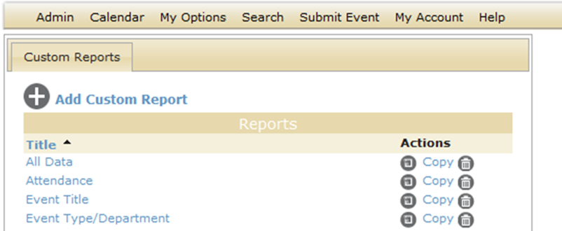
2. Click Add Custom Reports. The Report Builder dialog box opens. The Details tab is the opened tab. You use the options on the different tabs of this dialog box to name and define the custom report.
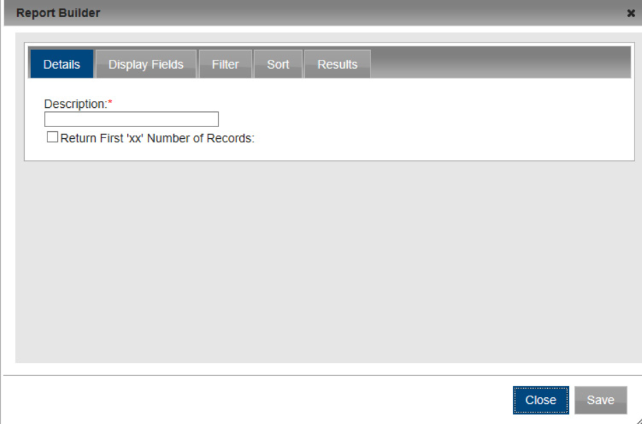
3. Enter the information for the custom report on each tab (using subsequent sections of this topic)
4. Do one of the following:
• Click Save to close the Report Builder dialog box and save the named custom report. The named custom report is displayed on the Custom Reports page. You can run this custom report at any later date when needed.
• Open the Results tab, and then click Preview to run the custom report immediately and view the results on the tab. You can then click Save to save the named custom report and close the Report Builder dialog box. The named custom report is displayed on the Custom Reports page. You can run this custom report at any later date when needed.
Details tab
1. On the Details tab, name and define the custom report.
| Option | Description |
| Description | Required. Name or title for the custom report (custom report). Note: The name can be a maximum of 50 characters, including spaces. |
| Return First “xx” Number of Records | To limit the number of records that the custom report returns, select this option, and then enter the number of records in the field. |
2. Continue with any other configuration for the custom report as needed, or if the configuration is complete, do one of the following:
• Click Save to close the Report Builder dialog box and save the named custom report. The named custom report is displayed on the Custom Reports page. You can run this custom report at any later date when needed.
• Open the Results tab, and then click Preview to run the custom report immediately and view the results on the tab. You can then click Save to save the named custom report and close the Report Builder dialog box. The named custom report is displayed on the Custom Reports page. You can run this custom report at any later date when needed.
Display Fields tab
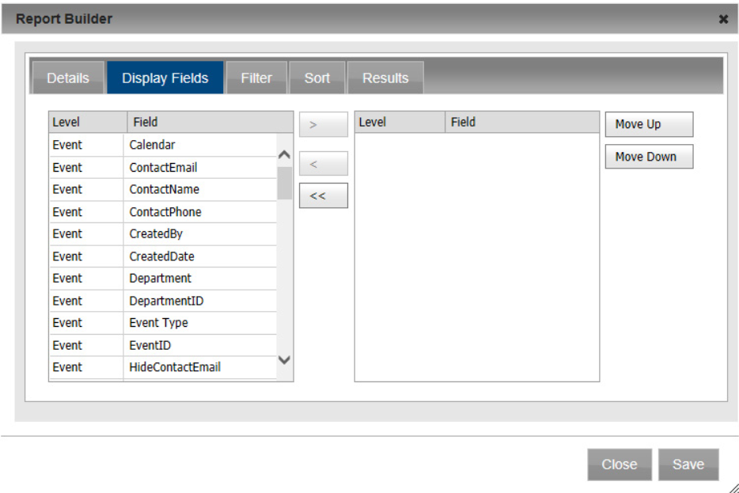
1. Open the Display Fields tab and select the fields (CTRL-click to select multiple fields) that are to be displayed in the custom report results, and then click the Add arrow (>) to move the selected fields to the Selected list. The fields are displayed in the custom report results in the order in which they are listed in the Selected list.
 | Tip:If you are copying an existing custom report, then when the Display Fields tab opens, the Selected list is already populated with a list of fields. You can select one or more of these fields in the Selected list and then click the Remove button (<) to move these fields back to the Available list. To remove all fields in a single step, click the Remove All (<<) button. |
2. Optionally, to change the order of the fields, select a field and then click Move Up/Move Down as needed.
3. Continue with any other configuration for the custom report as needed, or if the configuration is complete, do one of the following:
• Click Save to close the Report Builder dialog box and save the named custom report. The named custom report is displayed on the Custom Reports page. You can run this custom report at any later date when needed.
• Open the Results tab, and then click Preview to run the custom report immediately and view the results on the tab. You can then click Save to save the named custom report and close the Report Builder dialog box. The named custom report is displayed on the Custom Reports page. You can run this custom report at any later date when needed.
Filter tab
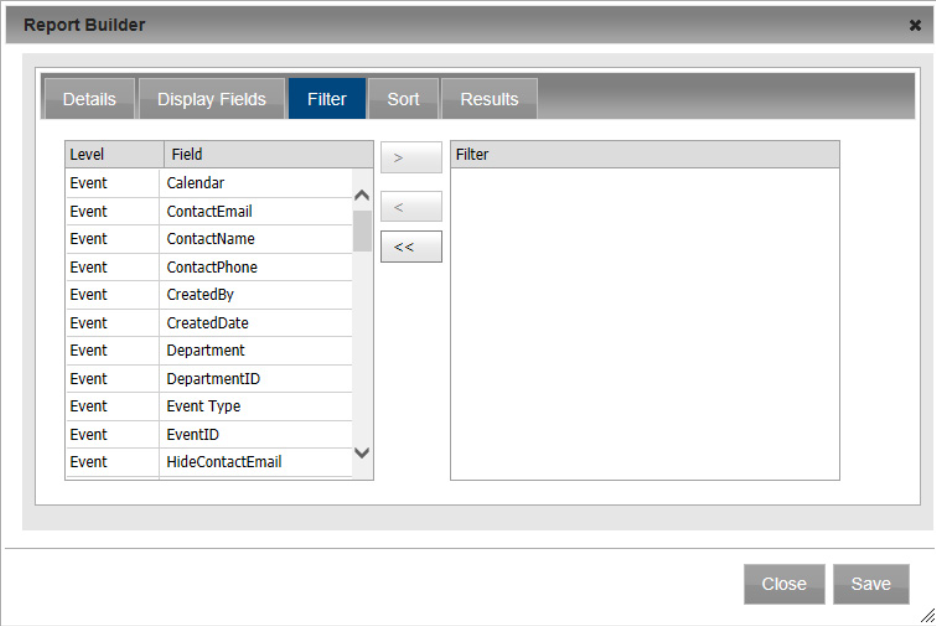
1. Open the Filter Fields tab, and for each field that is to define the custom report, select the field, and then click the Add arrow (>).
2. For each field that you select, a dialog box opens in which you must specify the allowed values for the field. After you specify the allowed values and click OK, the dialog box closes, and the selected field is moved to the Filter list. If you are copying an existing custom report, then when the Filter tab opens, the Filter list is already populated. You can select one or more of the fields in the Filter Summary list and then click the Remove button (<) to move these fields back to the Available list. If you want to use the same Filter fields in the “new” custom report, but with different values, you cannot change the values directly. You must move the appropriate fields back to the Available list, then select the fields again to change their values.
3. Continue with any other configuration for the custom report as needed, or if the configuration is complete, do one of the following:
• Click Save to close the Report Builder dialog box and save the named custom report. The named custom report is displayed on the Custom Reports page. You can run this custom report at any later date when needed.
• Open the Results tab, and then click Preview to run the custom report immediately and view the results on the tab. You can then click Save to save the named custom report and close the Report Builder dialog box. The named custom report is displayed on the Custom Reports page. You can run this custom report at any later date when needed.
Sort tab
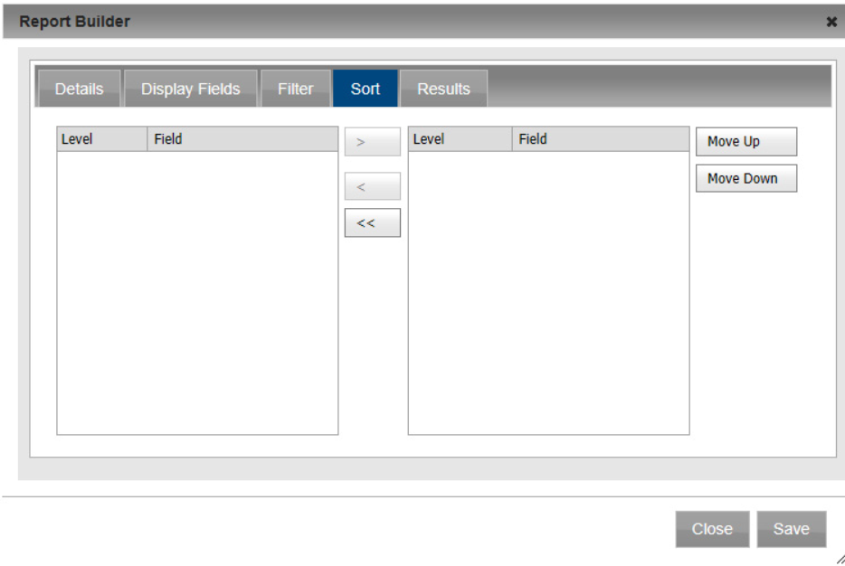
1. Open the Sort tab, select the field or CTRL-click to select the multiple fields by which the custom report results are to be sorted and then click the Add arrow (>) to move the fields to the Selected list.
| Tip:If you are copying an existing custom report, then when the Sort tab opens, the Selected list is already populated with a list of fields. You can select one or more of these fields in the Selected list and then click the Remove button (<) to move these fields back to the Available list. To remove all fields in a single step, click the Remove All (<<) button. |
2. Continue with any other configuration for the custom report as needed, or if the configuration is complete, do one of the following:
• Click Save to close the Report Builder dialog box and save the named custom report. The named custom report is displayed on the Custom Reports page. You can run this custom report at any later date when needed.
• Open the Results tab, and then click Preview to run the custom report immediately and view the results on the tab. You can then click Save to save the named custom report and close the Report Builder dialog box. The named custom report is displayed on the Custom Reports page. You can run this custom report at any later date when needed.
Creating a custom report by copying an existing custom report
1. On the Admin menu, point to Events & Special Dates, and then click Custom Reports. The Custom Reports page opens. This page always contains the Add Custom Reports option. It also displays a list of custom reports that have been previously defined in your Master Calendar database.
2. Click Copy for the custom report that you are copying. A message opens indicating that the selected report was copied.
3. Click OK to close the message and return to the Custom Reports page. An entry for the copied custom report is displayed on the Custom Reports page as
<custom report Name> Copy.
4. Click Edit next to the copied custom report that you are editing. The Report Builder dialog box opens. All the tabs are populated with the information for the selected custom report.
5. Edit the custom report as necessary, including one or more of the following:
6. Do one of the following:
• Click Save to close the Report Builder dialog box and save the named custom report. The named custom report is displayed on the Custom Reports page. You can run this custom report at any later date when needed.
• Open the Results tab, and then click Preview to run the custom report immediately and view the results on the tab. You can then click Save to save the named custom report and close the Report Builder dialog box. The named custom report is displayed on the Custom Reports page. You can run this custom report at any later date when needed.
Editing a custom report
1. On the Admin menu, point to Events & Special Dates, and then click Custom Reports. The Custom Reports page opens. This page always contains the Add Custom Reports option. It also displays a list of custom reports that have been previously defined in your Master Calendar database.
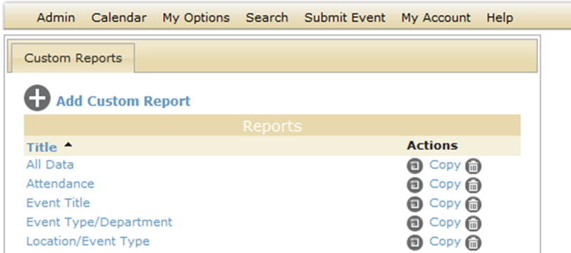
2. Click Edit next to the custom report that you are editing. The Report Builder dialog box opens. All the tabs are populated with the information for the selected custom report.
3. Edit the custom report as necessary including one or more of the following:
4. Do one of the following:
• Click Save to close the Report Builder dialog box and save the named custom report. The named custom report is displayed on the Custom Reports page. You can run this custom report at any later date when needed.
• Open the Results tab, and then click Preview to run the custom report immediately and view the results on the tab. You can then click Save to save the named custom report and close the Report Builder dialog box. The named custom report is displayed on the Custom Reports page. You can run this custom report at any later date when needed.
Deleting a custom report
1. On the Admin menu, point to Events & Special Dates, and then click Custom Reports. The Custom Reports page opens. This page always contains the Add Custom Reports option. It also displays a list of custom reports that have been previously defined in your Master Calendar database.
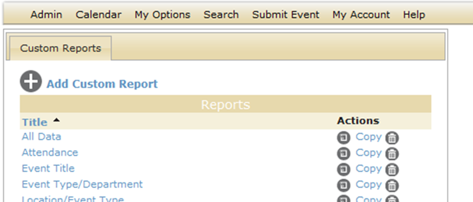
2. Click Delete next to the custom report that you are deleting.
3. Select the custom report that is to be deleted, and then click Delete. A message opens, asking you if it is OK to delete the selected report.
4. Click Yes. The message closes. The custom report is deleted, and another message opens indicating that the report was successfully deleted.
Running, printing, and exporting a custom report
1. On the Admin menu, point to Events & Special Dates, and then click Custom Reports. The Custom Reports page opens. This page always contains the Add Custom Reports option. It also displays a list of custom reports that have been previously defined in your Master Calendar database.
2. Click on the name/title of the custom report that you are running. An onscreen preview of the selected custom report opens in the Master Calendar application.
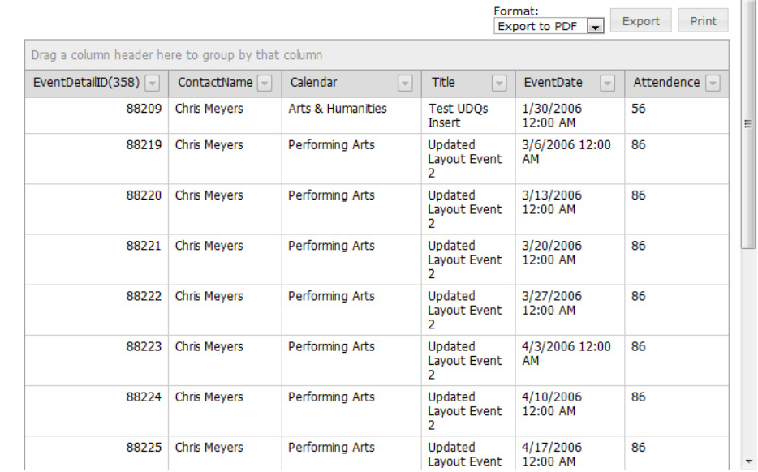
3. Optionally, do one or more or all the following:
• To group the report by a column header, drag the column to the indicated location at the top of the onscreen preview of the report.
• To change the sort order of the custom report results, click on a column header. Click on the column header again to reverse the sort order.
• To filter the custom report results, click on the Dropdown arrow next to a column header to open a list of all available values for the column, and select a specific value.
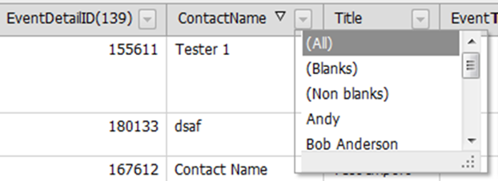
• To export the custom report to a PDF file or a Microsoft Excel file (CSV or XLS), under Format, select the appropriate Export option, and then click Export.
A File dialog box opens, asking you if you want to open or save the file. If you click Open, then the file is opened in the appropriate application (Adobe Acrobat or Reader for a PDF or Microsoft Excel for a CSV or XLS file) and you can use the options that area available in these applications to name and/or save the file. If you click Save, then you are prompted to name the file (the default name is ReportGrid.pdf, ReportGrid.csv, or ReportGrid.xls) and you must select a location for saving the file. (The default location is your client’s Desktop.)
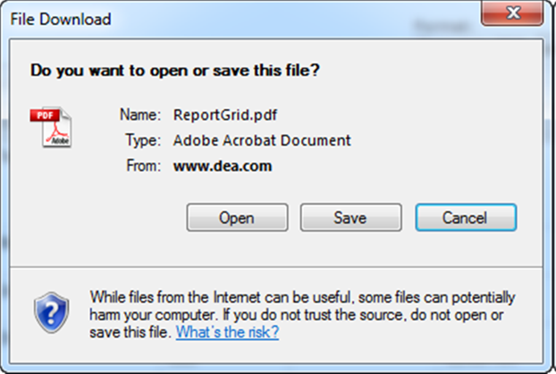
• To print the custom report, click Print. An onscreen preview of the selected custom report opens in its own window. A variety of options are available from this preview, including (from left to right at the top of the onscreen preview) the options to search the custom report results, print the custom report in its entirety, print the currently displayed custom report page and export the custom report to a file and save the file. PDF is the default format for exporting to a file. Other allowed formats are Xls, Xlsx, Rtf, Mnt, Text, Image, and Csv.
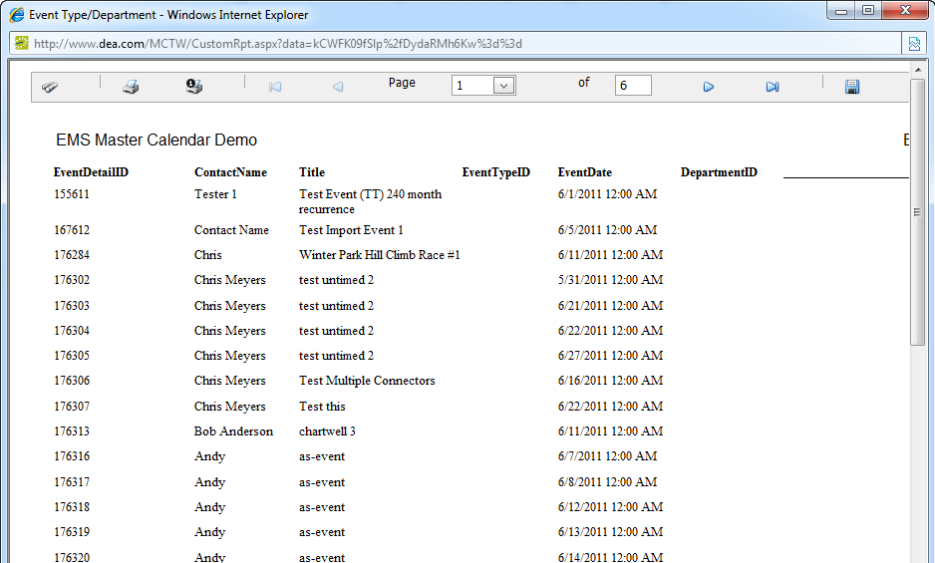
Page tags: article:topic